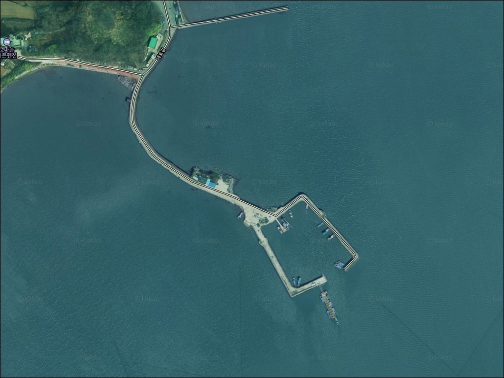
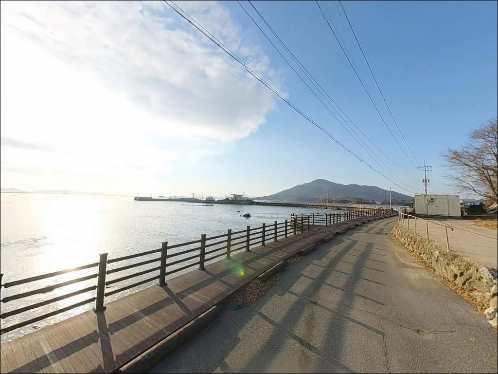
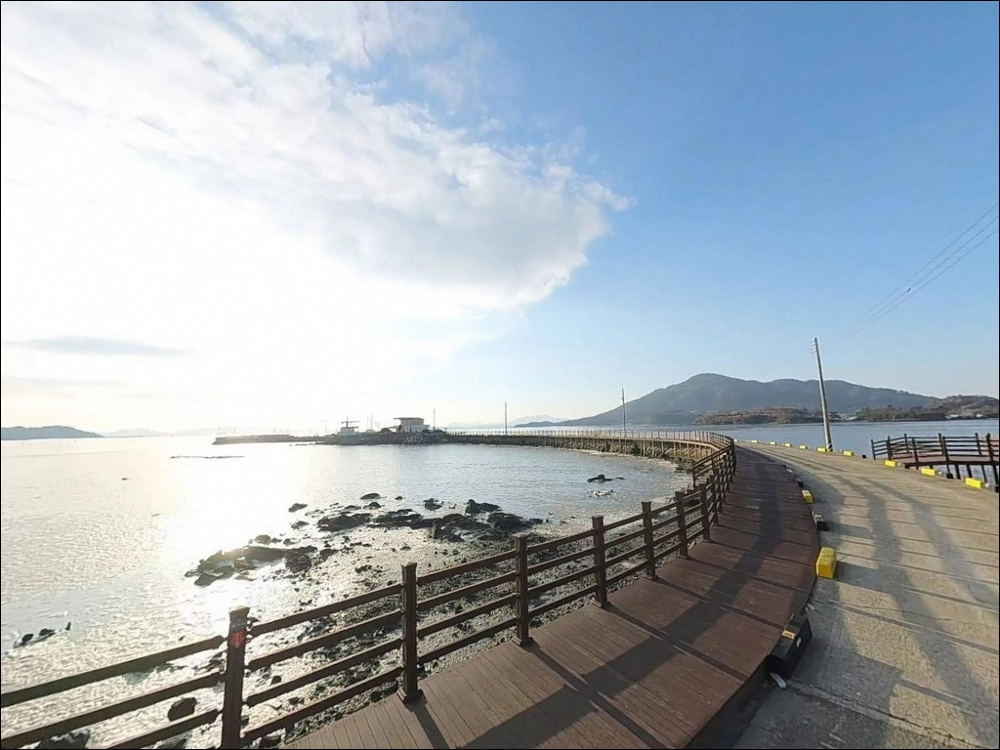
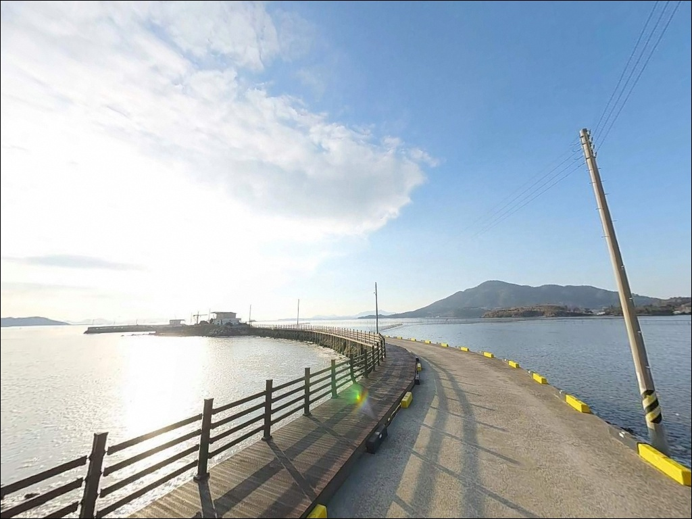
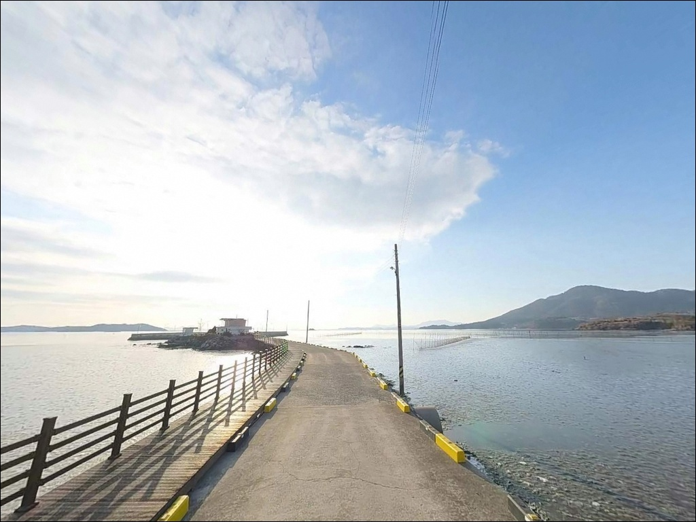
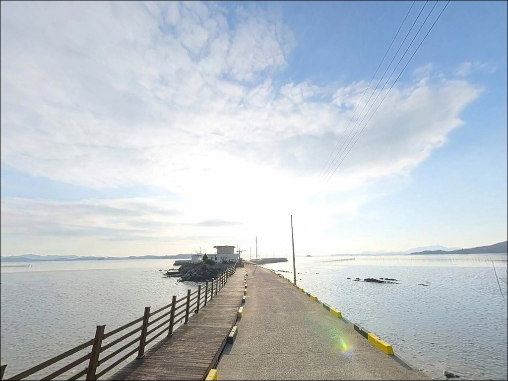
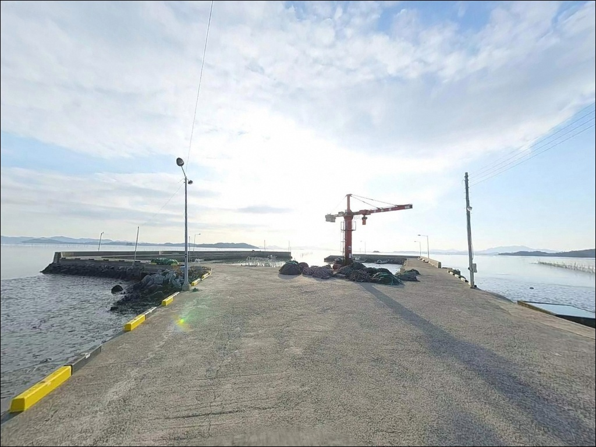
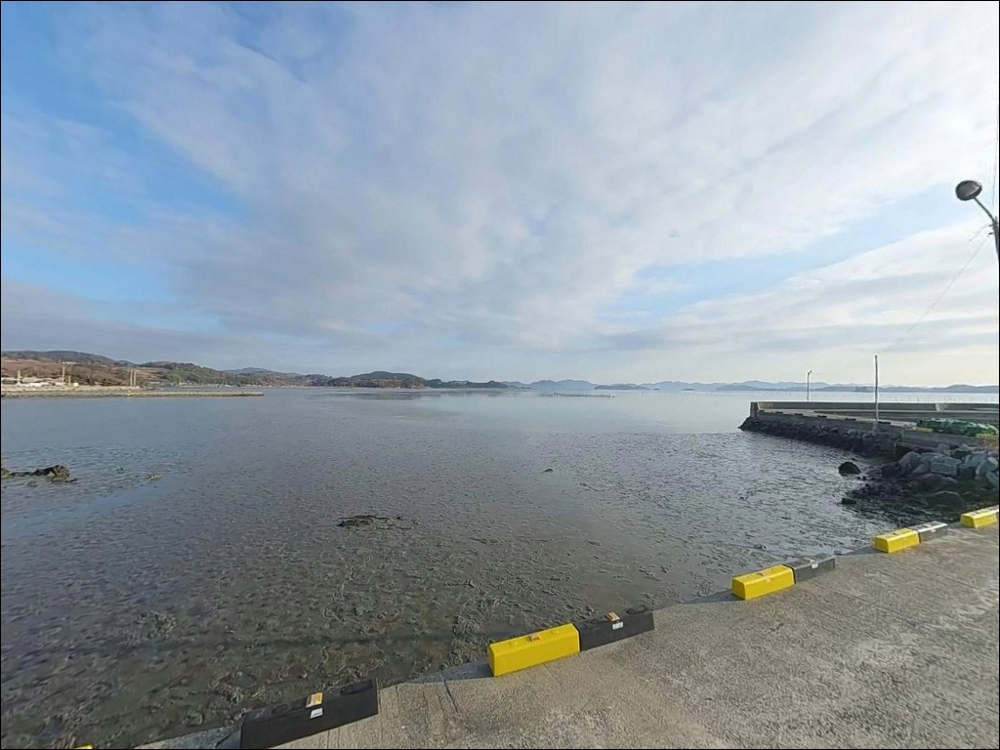
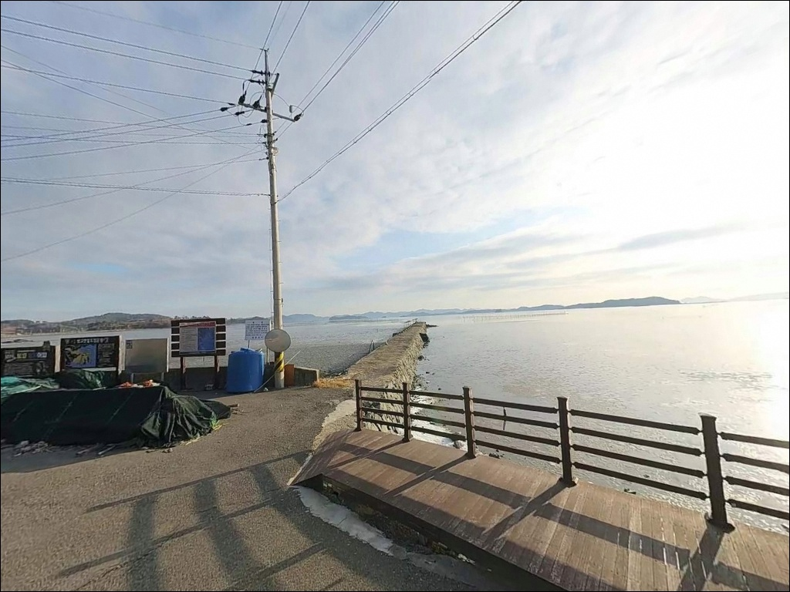

간조 시 갯벌 드러나는 보성 대포항 원투낚시, 만조 전후 2시간에 맞춰 들어온 입질
이 페이지에는 광고(제휴 링크 포함)가 있으며, 광고 링크를 통해 구매하면 운영자가 판매 수익 또는 수수료를 받을 수 있습니다. 포인트 사진: 카카오맵 스카이뷰·로드뷰. 이 페이지의 지도·사진 이미지는 카카오맵의 실제 서비스 이미지와 다를 수 있습니다.


포인트 안내
대포항
전남 보성군 벌교읍 대포리 234-6
대포항에서 가장 많이 하는 실수는
물때를 확인하지 않고 찾아가는 것입니다.
간조 시에는 광활한 갯벌이 그대로 드러나
선착장 주변에서 낚시다운 낚시를 할 수 없고,
만조 전후 2~3시간이 지나면
다시 수위가 빠져 조건이 사라집니다.
물때를 맞추지 않은 방문은
갯벌 구경으로 끝나는 경우가 많습니다.
여자만 동안 내만에 자리한 대포항은
2003년 지정된 어촌정주어항으로,
방파제 114m와 564m에 달하는 선착장을
갖춘 소형 항구입니다.
항 전면은 전형적인 펄(진흙) 갯벌 지형이며,
해양수산부 습지보호지역 제4호 구역에 인접해
있어 보성 벌교 특유의 생태 환경을 배경으로
갖춘 포인트입니다.
이 글은 대포항의
진입 환경, 차박 여건, 물때 판단 기준,
낚시 방식별 공략 조건에 집중합니다.
조황 단정이나 특정 어종 보장은
이 글의 범위에 포함되지 않습니다.

1. 진입 동선과 포인트 접근 여건
대포항은 벌교읍 소재지에서 남쪽으로
약 9km 거리에 있습니다.
군도 17호선을 따라 대포리 해안로로
진입하는 경로가 기본이며,
비포장 구간 없이 포장도로로 연결됩니다.
급경사도 없는 해안 평지 구간이라
차량 진입 자체에 큰 어려움은 없습니다.
다만 선착장 기점의 주차 공간은 협소합니다.
선착장 앞 소규모 공지에 2~3대,
마을회관 인근에 3~4대 수준의 공간이 있으며,
방파제 진입 전 해안도로 갓길은
임시 정차 수준에 그칩니다.
대형 차량은 넓은 구간에서 미리 유턴한 뒤
선착장 방향으로 전진 진입하는 방식이 안전합니다.
선착장 앞은 어선 계류 및 작업 공간과 인접합니다.
어선 입출항 시간대에는 동선을 피하는 것이 기본이며,
주차 후 낚시 자리까지 도보 접근이 가능한
구조이므로 주차 여건 확인을 먼저 하고
진입 여부를 판단하는 편이 효율적입니다.

2. 차박 환경과 야간 체류 여건
대포항의 차박 여건은 제한적인 편입니다.
대포리 마을이 항 인근에 형성되어 있고
민가 밀집도가 중간 수준이라,
완전한 독립 체류 환경을 기대하기는 어렵습니다.
차량 통행은 어선 입출항 시간대 외에는 적지만,
마을 시선과 생활 소음이 있는 환경이라는 점은
감안해야 합니다.
야간 가로등은 마을 도로 기준으로 존재하며,
선착장 주변 기본 조명도 일부 갖춰져 있습니다.
다만 낚시 자리로 이동하는 방파제 구간은
조명이 충분하지 않을 수 있으므로
개인 조명 장비는 반드시 준비해야 합니다.
야간 만조 타이밍을 노릴 경우에는
헤드랜턴과 구명조끼를 함께 챙기는 것이 기본입니다.
여자만 내만 구조상 외해 파도 영향은 거의 없어
차량 흔들림 걱정은 적습니다.
낚시 후 조용하게 단기 체류하는 용도라면
나쁘지 않지만,
차박을 메인으로 계획하는 여행자라면
벌교읍 방향의 대안 거점도 함께 검토하는 편이
현실적입니다.


3. 주변 편의시설 및 인프라 현황
대포리 마을 반경 3km 이내에서
편의점이나 마트는 확인되지 않습니다.
본격적인 생활 인프라를 이용하려면
벌교읍 중심부(벌교역 인근)까지
약 5~7km를 이동해야 합니다.
CU·GS25 등 편의점과 대형 마트, 병원, 약국이
벌교읍 내에 집중 분포해 있습니다.
대포리 인근에 소규모 슈퍼마켓이
존재하는 것으로 파악되지만
운영 시간이나 상태는 방문 전 확인이 필요합니다.
식수와 얼음, 낚시 소품, 연료는
벌교읍에서 미리 보급하고 진입하는 방식이
가장 확실합니다.
응급 상황 발생 시에도 벌교읍 내
보건지소와 약국을 기점으로 대응할 수 있습니다.
거리가 가까운 편이라
외딴 포인트 특유의 고립감은 상대적으로 적은
포인트입니다.

4. 물때를 모르면 낚시가 시작되지 않는 구조
대포항 방문 전에 가장 먼저 확인해야 할 것은
물때입니다.
여자만 내만은 조차가 크고 간조 시에는
선착장 주변 바닥이 그대로 드러납니다.
만조 전후 2~3시간이 낚시 가능한 시간대이며,
이 타이밍을 맞추지 않으면
아무 준비가 있어도 의미가 없는 포인트입니다.
바다타임에서 보성(벌교) 기준 물때를 확인하고
출발 시각을 역산해 잡는 것이 기본입니다.
야간 만조를 노릴 경우에는
장어(붕장어) 원투 채비가 유리한 시간대가 됩니다.
낮 만조라면 숭어나 망둑어를 대상으로
찌낚시 또는 가벼운 원투 채비가 잘 맞습니다.
펄 바닥 특성상 봉돌이 깊이 박힐 수 있어
가벼운 채비로 텐션을 유지하는 방식이
이 지형에 더 효율적입니다.
대포리 일대는 해양수산부 습지보호지역 제4호로
지정된 구역과 인접해 있습니다.
선착장과 방파제 외의 갯벌 구간에서는
관련 행위 제한이 적용될 수 있으므로,
낚시 장소는 선착장과 방파제 범위 내로
한정하는 것이 기본 매너입니다.

5. 지형 기반 낚시 여건 분석
원투낚시란 무거운 봉돌을 달아 멀리 던진 뒤
바닥 가까이 대상어를 기다리는 낚시 방식입니다.
대포항의 지형은 이 방식에 비교적 잘 맞는
구조를 갖추고 있습니다.
방파제 114m와 선착장 564m로 이뤄진
항 구조에서 방파제 끝단과 선착장 외측은
채비를 멀리 보낼 수 있는 자리입니다.
수로 가장자리와 방파제 끝단이
어류 이동 통로 역할을 하는 구간으로,
이 지점을 집중적으로 탐색하는 것이
기본 공략 방향입니다.
수심은 내만 특성상 얕은 편이지만,
방파제 끝단과 수로 입구 부근에서
수심이 급변하는 구간이 형성됩니다.
이 구간이 어류가 집결하기 좋은 조건이며,
만조 시 수위가 올라오면
숭어와 망둑어가 수로를 따라 움직이는 패턴이
이 일대 내만 해역에서 나타납니다.
펄 바닥 지형의 특성상 밑걸림은 적지만,
봉돌이 진흙에 묻히면 채비 감각이 둔해지는
단점이 있습니다.
가벼운 봉돌로 텐션을 유지하거나
채비를 자주 들어 확인하는 방식으로 대응합니다.
출조 전에 벌교읍 일대 최신 조황을
반드시 검색해 보시기 바랍니다.


6. 포인트에 어울리는 낚시 스타일
이 포인트에서 가장 기본이 되는 낚시는
원투낚시입니다.
방파제 끝단에서 먼 거리를 투척해
수로 가장자리 바닥층을 노리는 방식으로,
숭어와 망둑어, 야간 만조라면
붕장어도 기대해 볼 수 있는 여건입니다.
만조 시작 전에 미리 자리를 잡고
수위가 올라오면서 조건이 갖춰지는
타이밍에 채비를 넣는 방식이 효율적입니다.
찌낚시도 이 포인트에 잘 맞는 스타일입니다.
내항 쪽 잔잔한 수면에서
낮게 수심을 설정하고 선착장 벽면이나
수로 중앙을 공략하는 방식으로 운용합니다.
물이 들어오는 시점에 맞춰 채비를 세팅하면
숭어와 전어 대응에 유리한 조건이 만들어집니다.
찌낚시 특성상 수심 설정을 얕게 유지하는 것이
이 지형에서의 기본 운용법입니다.
가을~겨울철에는 만 내부로 감성돔이 진입하는
패턴이 여자만 일대 해역에서 나타납니다.
릴찌낚시로 수로 방향을 노리거나
방파제 끝단에서 원투로 공략하는 방식 모두
이 시즌에 시도해 볼 수 있습니다.
조과보다는 조용한 분위기에서 낚시를 즐기는
생활낚시형 출조에 잘 맞는 포인트입니다.

7. 대안 포인트와 플랜 B 동선
대포항의 물때가 맞지 않거나
주차 여건이 여의치 않을 경우,
첫 번째 대안은
보성군 조성면 조도 방파제입니다.
대포항보다 외해에 접한 구조로
원투낚시와 루어낚시 여건이 더 갖춰져 있으며,
수심 변화도 비교적 명확한 편입니다.
고흥군 동강면 일대 방파제도
여자만 남측 해역에서 대안이 됩니다.
감성돔과 볼락 패턴이 이 일대 해역에서
확인된 포인트들이 분포하며,
대포항에서 10km 내외 거리에서
수심과 조류 여건이 한 단계 나은 포인트들을
탐색할 수 있습니다.
차박 여건이 불충분하다고 판단될 경우에는
벌교읍 공영주차장 방향이 현실적인 대안입니다.
화장실과 편의점이 인접하고
야간 안전성도 높아
차박 거점으로 먼저 잡은 뒤
대포항을 낮 만조 타이밍에 당일치기로
방문하는 동선이 효율적입니다.

물때를 알고 가면
대포항이 달라 보입니다
갯벌 생태 환경 속에서 조용하게 낚시를 즐기는
생활낚시형 출조를 선호하는 낚시인이라면
대포항의 구조는 잘 맞습니다.
화려한 조과보다는
벌교 갯벌의 풍경 속에서 원투 채비 하나 깔아두고
만조가 채워지길 기다리는 방식의 낚시에
잘 어울리는 포인트입니다.
반면 물때 확인 없이 찾아가거나,
외해형 방파제처럼 활발한 조류와
수심 있는 자리를 기대하고 간다면
실망할 가능성이 높습니다.
바다타임 물때 확인, 벌교읍 사전 보급, 진입로 파악—
이 세 가지를 갖추고 만조 타이밍에 맞춰 간다면
조용하고 여유 있는 출조가 됩니다.
낚시를 마치고 차 안에서 하룻밤 머무는
가벼운 차박을 계획하는 여행자라면,
벌교읍에서 보급을 완비하고
대포항을 낚시 거점으로 삼되
갯벌 노을을 배경 삼아
조용한 하룻밤을 보내기에 나쁘지 않은 곳입니다.